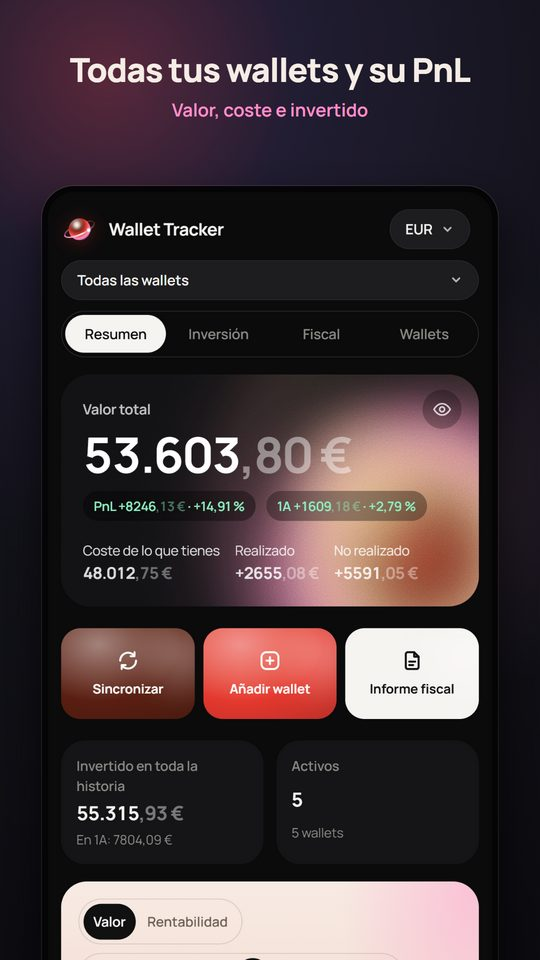
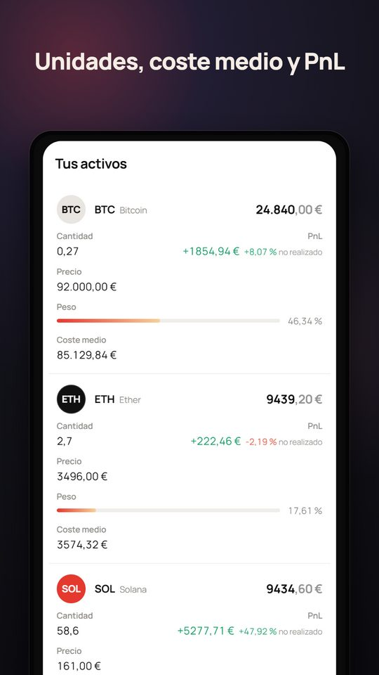
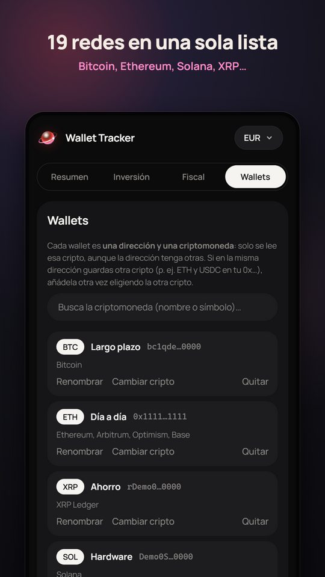
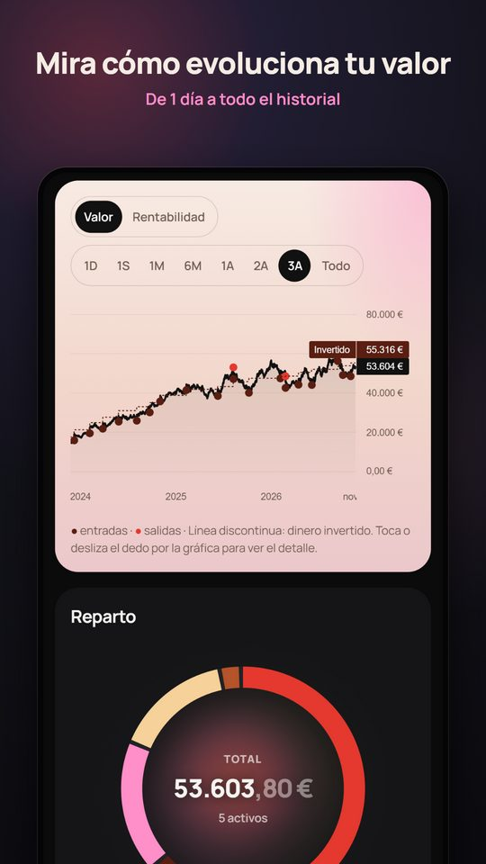
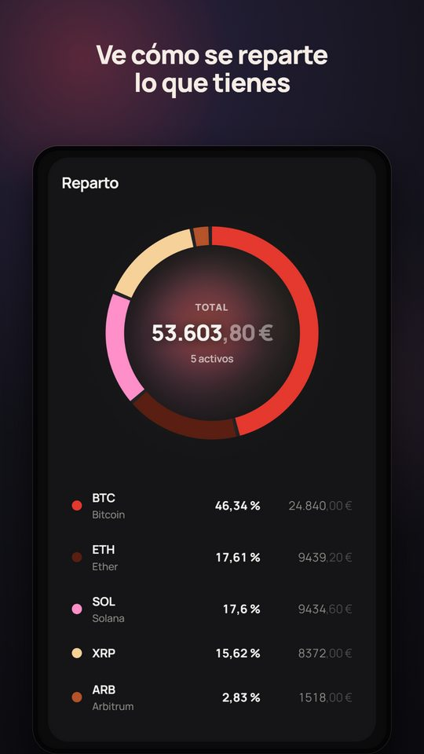
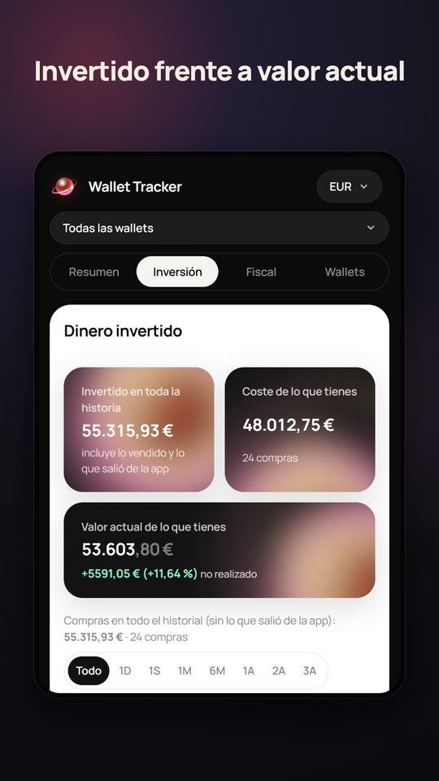
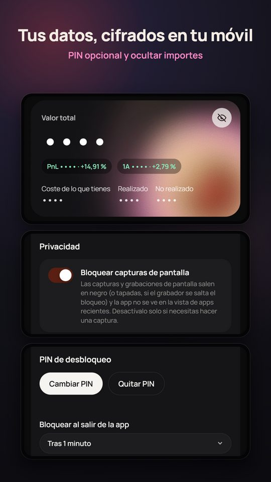
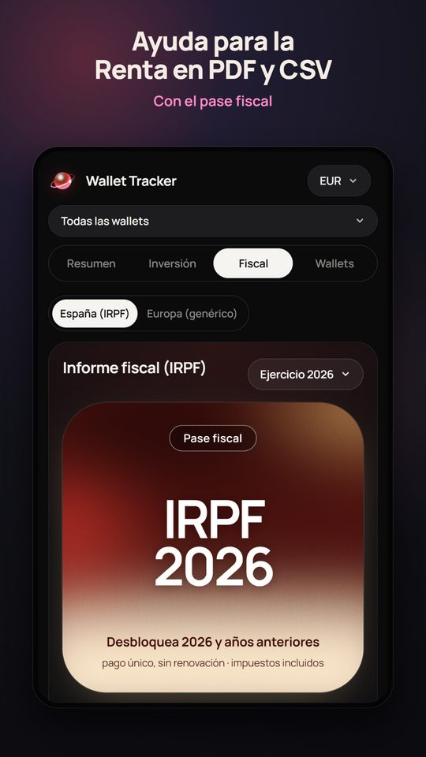

App para Android
Todas tus wallets y su PnL en una pantalla.
Una herramienta para ver todas tus wallets a la vez y saber cómo están: unidades, valor, coste, dinero invertido y ganancias y pérdidas, por moneda y en total.
Ahora mismo en prueba cerrada. Ver tus wallets es gratis, sin suscripción y sin anuncios.

Todo lo que tienes, de un vistazo
Añade tus direcciones públicas y la app reúne en un solo sitio lo que tienes en cada red.
Un único total
Todas tus wallets y redes juntas, con el detalle de cada moneda.
Coste y PnL
Unidades, precio, coste medio, dinero invertido y PnL realizado y no realizado.
Gráficos
Evolución del valor desde 1 día hasta todo el historial, y cómo se reparte lo que tienes.
Precios en directo
Las principales monedas se actualizan cada pocos segundos. Importes en EUR, USD o GBP.
Traspasos propios
Detecta los movimientos entre tus wallets para que no cuenten como ventas ni te descuadren el coste.
Historial de exchanges
Importa el CSV de Binance, Kraken o Coinbase, o añade movimientos con la plantilla de la app.
Así se ve
Capturas con datos de demostración: wallets y cifras ficticias.







19 redes
Y tu historial de exchanges importado desde CSV.
- Bitcoin
- Ethereum
- Arbitrum
- Optimism
- Base
- Polygon
- BNB Chain
- Avalanche
- Ethereum Classic
- HyperEVM
- Hyperliquid
- Solana
- Cardano
- XRP Ledger
- Stellar
- TRON
- Litecoin
- Dogecoin
- Bitcoin Cash
Arbitrum, Base, Polygon, BNB Chain y HyperEVM necesitan tu propia clave gratuita de Etherscan (en Ajustes) para leer los movimientos.
Tus datos se quedan contigo
Solo lee direcciones públicas: nunca te pide la frase de recuperación ni claves privadas.
Lo que hace
- Guarda tus datos cifrados en tu móvil.
- Consulta directamente servicios públicos de blockchain y de precios.
- PIN opcional, ocultar importes con un toque y bloqueo de capturas.
Lo que no hace
- No es una wallet: no puede enviar, recibir, comprar, vender ni intercambiar criptomonedas.
- No pide cuenta ni registro, y no tiene servidores propios.
- No muestra anuncios ni usa analíticas.
Detalle completo en la política de privacidad.
Ayuda para la Renta (opcional)
Para quien la necesite. Ver tus wallets no depende de ella.
Informe de IRPF
Ganancias y pérdidas patrimoniales por el método FIFO, en euros y por ejercicio.
Informe europeo
Genérico, con los datos que piden la mayoría de declaraciones (no adaptado a las normas de cada país).
PDF y CSV
Si falta un precio o un tipo de cambio, el informe te avisa: nunca lo rellena en silencio.
Los informes de un ejercicio se desbloquean con el pase fiscal, un pago único en Google Play que también desbloquea todos los ejercicios anteriores. Sin suscripción.